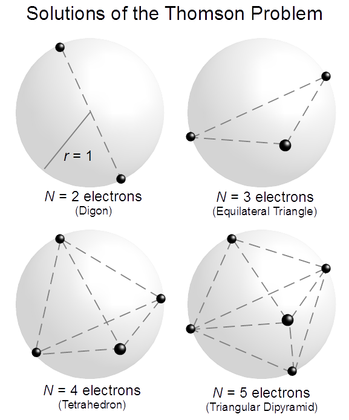
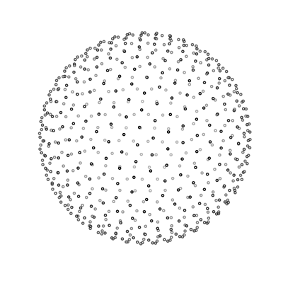

Open source software library for machine learning, released by Google. Synonymous with "deep-learning". Computation lives on a graph and analytic derivatives are possible.
What is the Thomson problem?
The objective of the
Thomson problem
is to determine the minimum electrostatic potential energy configuration of N electrons constrained to the surface of a unit sphere that repel each other with a force given by Coulomb's law.

Can we use TensorFlow to
solve the Thomson problem?
Spoiler alert: Yes!
Build a model
def thompson_model(N):
tf.reset_default_graph()
# Start with random coordinates from a normal dist
r0 = np.random.normal(size=[N,3])
coord = tf.Variable(r0, name='coordinates')
# Normalize the coordinates onto the unit sphere
coord = coord/tf.reshape(tf.norm(coord,axis=1),(-1,1))
def squared_diff(A):
r = tf.reduce_sum(A*A, 1)
r = tf.reshape(r, [-1, 1])
return r - 2*tf.matmul(A, tf.transpose(A)) + tf.transpose(r)
RR = squared_diff(coord)
# We don't need to compute the gradient over the symmetric distance
# matrix, only the upper right half
mask = np.triu(np.ones((N, N), dtype=np.bool_), 1)
R = tf.sqrt(tf.boolean_mask(RR, mask))
# Electrostatic potential up to a constant, 1/r
U = tf.reduce_sum(1/R)
return U, coord
Minimize the energy
def minimize_thompson(N):
U, coord = thompson_model(N)
learning_rate = 0.1
LR = tf.placeholder(tf.float64, shape=[])
opt = tf.train.AdamOptimizer(learning_rate=LR).minimize(U)
with tf.Session() as sess:
init = tf.global_variables_initializer()
sess.run(init)
for n in xrange(50):
for _ in range(100):
sess.run(opt, feed_dict={LR:learning_rate})
# Even ADAM gets stuck, slowly decay the learning rate
learning_rate *= 0.96
Make pictures
100 charges

625 charges
Does it always work?
NO!
When N gets large there are an exponentially large amount of stable configurations that aren't the minima.
Does TensorFlow make it faster?
YES!
TensorFlow on a GPU is 10x faster than the 4-cores on a CPU (tested at N=4000)
Is it useful?
EH.
The solution to the Thomson problem isn't exciting
per se
but new solutions often give insight into minimization problems. This is more of an example of a novel use of TensorFlow.